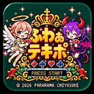

ふわぁ テキポ GBA版
このゲームをホーム画面から直接起動できます。
Chromeの対応状況によっては自動表示できません。その場合は、Chrome右上の「︙」→「ホーム画面に追加」→「アプリをインストール」を選んでください。
ゲームを開く「すでにインストールされています」と出た場合は、既存アプリの状態をChromeが認識しています。
ショートカットの場合は、ゲーム画面を開いてChromeの「︙」→「ホーム画面に追加」→「ショートカットを作成」を選びます。

このゲームをホーム画面から直接起動できます。
「すでにインストールされています」と出た場合は、既存アプリの状態をChromeが認識しています。
ショートカットの場合は、ゲーム画面を開いてChromeの「︙」→「ホーム画面に追加」→「ショートカットを作成」を選びます。